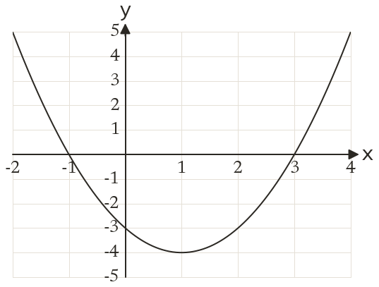
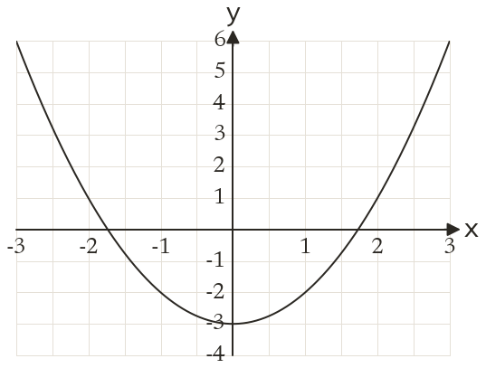
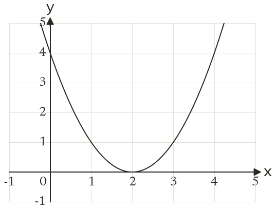
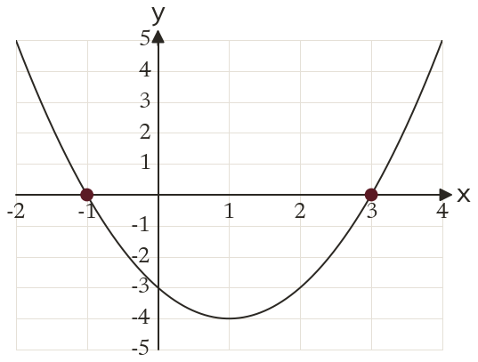
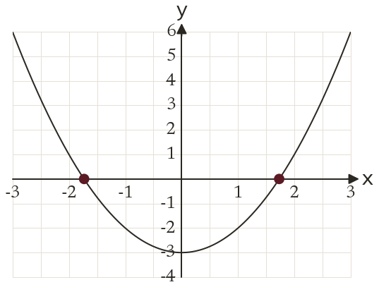

Westonbirt Maths · Quadratics and Their Graphs
Roots from a Quadratic Graph
Name: ______________________ Date: ____________
1
The graph of y = x² - 2x - 3 is drawn. Use it to solve x² - 2x - 3 = 0.
2
The graph of y = x² - 3 is drawn. Use it to solve x² - 3 = 0, to 1 d.p.
3
The graph of y = x² - 4x + 4 is drawn. How many solutions does x² - 4x + 4 = 0 have?
4
y = x² + 4x - 5 crosses the x-axis at (-5, 0) and (1, 0). Solve x² + 4x - 5 = 0.
5
A graph gives a root of x² - 3 = 0 as 1.7. Why is that not exact?
Ext
y = x² + bx + c crosses the x-axis at x = -2 and x = 6. Find b and c.




